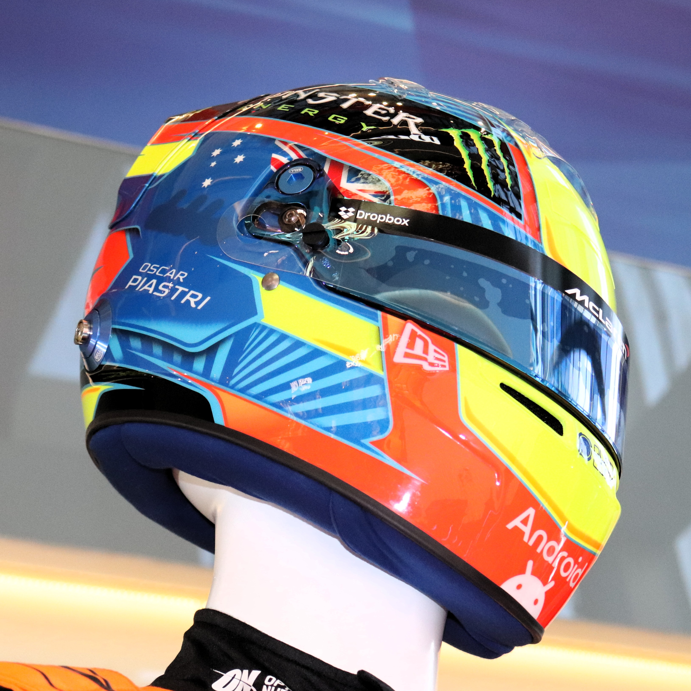

In the frame
Home turf
81

Melbourne Walk, 2026
ALBERT PARK · AUSTRALIAN GRAND PRIX

The lid
A design carried over from his karting days: red and blue base colours, fluorescent yellow details, and the flag of Australia — barely changed since he was racing for regional titles as a kid.
Photos: Yu Chu Chin and Liauzh · Wikimedia Commons · CC BY-SA 4.0